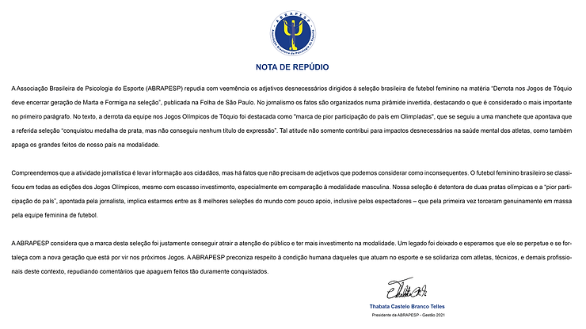

O comentário publicado, no dia 30 de julho, na Folha de São Paulo, sobre a seleção feminina de futebol“A derrota deixa a marca de pior participação do país em Olimpíadas” foi o estopim para os psicólogos do esporte. Comentários como este numa olimpíada impactada pela COVID, sem público e a decisão de Simone Biles priorizar a saúde mental, levou a ABRAPESP a publicar uma nota de repúdio, assinada pela presidente Thabata Telles.
